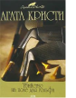

Убийство на поле для гольфа

В дебютном романе Агаты Кристи "Загадочное происшествие в Стайлзе", вышедшем в 1920 году, читатель впервые встречается с самым знаменитым сыщиком XX столетия - усатым бельгийцем Эркюлем Пуаро, а также с его другом и помощником Гастингсом. Именно в этом романе Пуаро впервые демонстрирует свои дедуктивные способности - раскрывает преступление, опираясь на всем известные факты. В следующем романе о приключениях великого сыщика ему приходится расследовать несколько загадочных убийств на вилле "Женевьева".